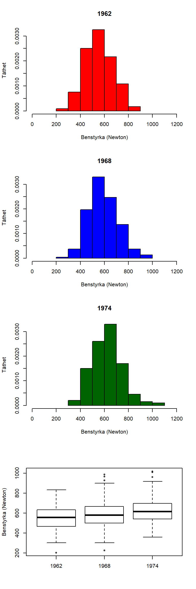
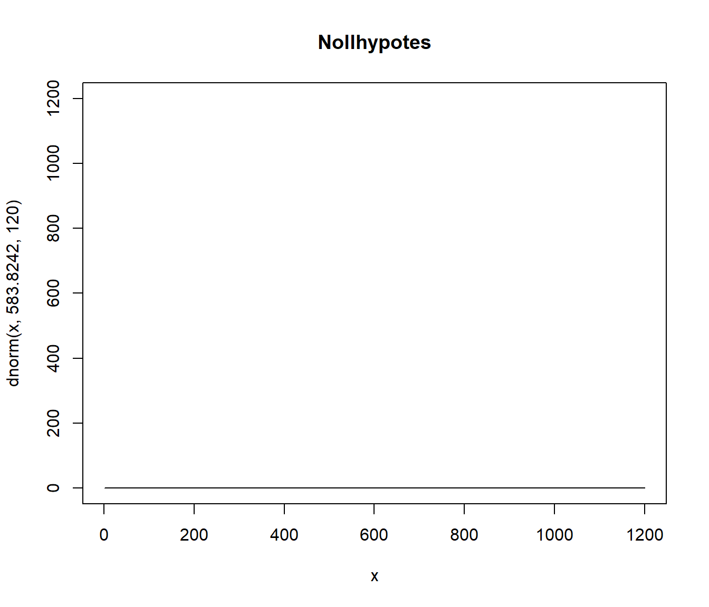
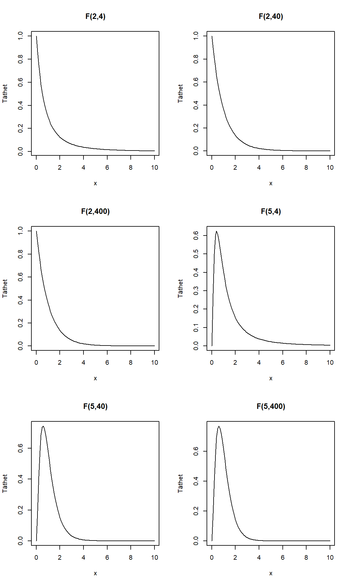
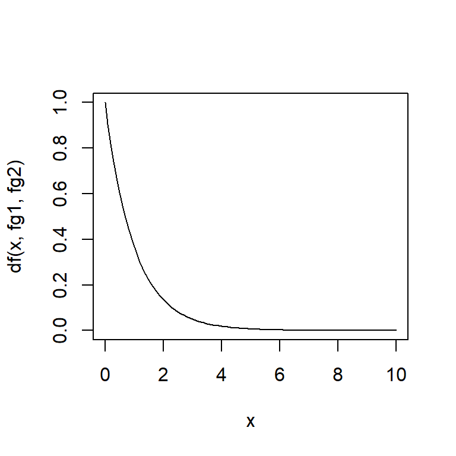

Kapitel 10 Experiment
10.1 Det klassiska experimentet
Anta att målet är att jämföra två stycken populationer med avseende på medelvärden. I populationen har vi \[\delta = \mu_t - \mu_c\] För att skatta denna skillnad använder vi \[\hat{\delta} = \bar{y}_t - \bar{y}_c\] där \(\bar{y}_t = \dfrac{1}{n_t}\sum_{i=1}^{n_t} y_{t,i}\) och \(\bar{y}_c = \dfrac{1}{n_c}\sum_{i=1}^{n_c} y_{c,i}\).
För att skatta variansen för denna estimator använder vi \[\hat{V}(\hat{\delta}) = \dfrac{s^2_t}{n_t} + \dfrac{s^2_c}{n_c}\]
\(\hat{\delta}\) är approximativt normalfördelad i stora stickprov.
library("Matching")
Warning: package 'Matching' was built under R version 3.6.3
Loading required package: MASS
##
## Matching (Version 4.9-7, Build Date: 2020-02-05)
## See http://sekhon.berkeley.edu/matching for additional documentation.
## Please cite software as:
## Jasjeet S. Sekhon. 2011. ``Multivariate and Propensity Score Matching
## Software with Automated Balance Optimization: The Matching package for R.''
## Journal of Statistical Software, 42(7): 1-52.
##
data(lalonde)
df <- lalonde
n_t <- sum(df$treat == 1)
n_c <- sum(df$treat == 0)
ybar_t <- mean(df$re78[df$treat == 1])
ybar_c <- mean(df$re78[df$treat == 0])
deltahat <- ybar_t -ybar_c
s2_t <- var(df$re78[df$treat == 1])
s2_c <- var(df$re78[df$treat == 0])
vhatdeltahat <- s2_t/n_t + s2_c/n_c
se_hatdelta <- sqrt(vhatdeltahat)
KI_delta <- c(deltahat - 1.96*sqrt(vhatdeltahat), deltahat + 1.96*sqrt(vhatdeltahat))
zobs <- deltahat/sqrt(vhatdeltahat)
p_value <- 2*(1 - pnorm(abs(zobs)))
deltahat
[1] 1794.343
se_hatdelta
[1] 670.9967
KI_delta
[1] 479.1895 3109.4967
zobs
[1] 2.674146
p_value
[1] 0.007491987I R används Welchs \(t\)-test
t.test(df$re78 ~ df$treat, var.equal = FALSE)
Welch Two Sample t-test
data: df$re78 by df$treat
t = -2.6741, df = 307.13, p-value = 0.007893
alternative hypothesis: true difference in means is not equal to 0
95 percent confidence interval:
-3114.6754 -474.0108
sample estimates:
mean in group 0 mean in group 1
4554.802 6349.145 Lika eller olika varianser?
t.test(df$re78 ~ df$treat, var.equal = TRUE)
Two Sample t-test
data: df$re78 by df$treat
t = -2.8353, df = 443, p-value = 0.004788
alternative hypothesis: true difference in means is not equal to 0
95 percent confidence interval:
-3038.1113 -550.5749
sample estimates:
mean in group 0 mean in group 1
4554.802 6349.145 10.2 Stratifiering
Utgå från att vi har \(G\) strata eller block där stratum \(g\) består \(n_g\) observationer. Vi utför inom varje stratum en randomisering, enligt det klassiska experimentet. Vi har nu en stratumspecifik medelvärdesskillnad \[\delta_g = \mu_{t,g} - \mu_{c,g}\] vilken skattas med \[\hat{\delta}_g = \bar{y}_{t,g} - \bar{y}_{c,g}\] {y}_{t,g}
Variansen för denna skattas med
\[\hat{V}(\hat{\delta}_g) = \dfrac{s^2_{t,g}}{n_{t,g}} + \dfrac{s^2_{c,g}}{n_{c,g}}\]
Skattningarna vi får är nu
\[\hat{\delta}_{st} = \sum_{g=1}^G\left(\dfrac{n_g}{n}\right)\hat{\delta}_g\] vars varians skattas med \[\hat{V}\left(\hat{\delta}_{st}\right) = \sum_{g=1}^G\left(\dfrac{n_g}{n}\right)^2\hat{V}(\hat{\delta}_g)\]
# Stratum (block) 1
n_t1 <- sum(df$treat == 1 & df$u75 == 0)
n_c1 <- sum(df$treat == 0 & df$u75 == 0)
n_1 <- n_t1 + n_c1
ybar_t1 <- mean(df$re78[df$treat == 1 & df$u75 == 0])
ybar_c1 <- mean(df$re78[df$treat == 0 & df$u75 == 0])
deltahat_1 <- ybar_t1 - ybar_c1
s2_t1 <- var(df$re78[df$treat == 1 & df$u75 == 0])
s2_c1 <- var(df$re78[df$treat == 0 & df$u75 == 0])
vhatdeltahat_1 <- s2_t1/n_t1 + s2_c1/n_c1
# Stratum (block) 2
n_t2 <- sum(df$treat == 1 & df$u75 == 1)
n_c2 <- sum(df$treat == 0 & df$u75 == 1)
n_2 <- n_t2 + n_c2
ybar_t2 <- mean(df$re78[df$treat == 1 & df$u75 == 1])
ybar_c2 <- mean(df$re78[df$treat == 0 & df$u75 == 1])
deltahat_2 <- ybar_t2 - ybar_c2
s2_t2 <- var(df$re78[df$treat == 1 & df$u75 == 1])
s2_c2 <- var(df$re78[df$treat == 0 & df$u75 == 1])
vhatdeltahat_2 <- s2_t2/n_t2 + s2_c2/n_c2
n <- n_1 + n_2
# Effekt
deltahat_st <- (n_1/n)*deltahat_1 + (n_2/n)*deltahat_2
vhatdeltahat_st <- (n_1/n)^2*vhatdeltahat_1 + (n_2/n)^2*vhatdeltahat_2
se_hatdelta_st <- sqrt(vhatdeltahat_st)
zobs_st <- deltahat_st/sqrt(vhatdeltahat_st)
p_value_st <- 2*(1 - pnorm(abs(zobs_st)))
KI_delta_st <- c(deltahat_st - 1.96*sqrt(vhatdeltahat_st), deltahat_st + 1.96*sqrt(vhatdeltahat_st))
deltahat_st
[1] 1704.384
se_hatdelta_st
[1] 664.0103
KI_delta_st
[1] 402.9236 3005.8441
p_value_st
[1] 0.01026408
# Jämförelse av variansskattningar
vhatdeltahat/vhatdeltahat_st
[1] 1.02115410.3 Tabell 1 vid randomiserade försök
10.4 ANOVA
För att introducera Analysis of Variance (ANOVA) och få en förståelse för en del underliggande koncept ska vi se på mönstringsdatat INSARK. Framför allt fokuserar vi på benstyrkan hos unga män födda år 1962, 1968 och 1974 som mönstrade. Populationsdata som består av 52347 stycken 1962, 48771 år 1968 samt 43741 år 1974 presenteras nedan.
df <- read.csv2("data/conscriptiondata.csv")
par(mfrow = c(3,1))
hist(df$legstrength[df$year == 1962], breaks = 100, col = "red", freq = FALSE, main = "", xlab = "Benstyrka (Newton)")
hist(df$legstrength[df$year == 1968], breaks = 100, add = TRUE, col = "blue", freq = FALSE)
hist(df$legstrength[df$year == 1974], breaks = 100, add = TRUE, col = "darkgreen", freq = FALSE)
plot(density(df$legstrength[df$year == 1962], bw = 15), col = "red", main = "Tre populationner?", xlab = "Benstyrka (Newton)")
lines(density(df$legstrength[df$year == 1968], bw = 15), col = "blue")
lines(density(df$legstrength[df$year == 1974], bw = 15), col = "darkgreen")
plot(density(df$legstrength[df$year == 1962 | df$year == 1968 | df$year == 1974], bw = 40), col = "black", main ="En population?", xlab = "Benstyrka (Newton)")
Börja nu med att anta att vi inte kan observera all data. Vi önskar dock få en uppfattning om benstyrkan i populationen och om denna skiljer sig åt mellan åren. För att besvara denna fråga drar vi ett OSU från respektive födelseår med storlekarna \(n_1=120\), \(n_2=300\), \(n_3=200\). Dessa individers benstyrka mäts och data lägga in i ett dataframe.
df <- data.frame(y = c(467.4,590.5,599.7,546.7,615.9,508.3,780.3,563.4,782,625.9,709.2,471.9,623.9,636.6,706.8,740.6,580.3,518.1,526.6,584.8,470.5,463.8,627.5,448.1,464.5,365.2,603.8,541.6,612.6,457.1,472.3,568.6,479.2,584.1,303,673.8,397.6,513.2,529.6,766.1,696,430.3,452.4,540.8,641.8,480.2,411.3,726.2,577.5,421.5,515.7,833.8,512.2,509.3,420.9,704.2,467.8,400.7,419,427.3,565.9,564.2,204.2,490.5,448.9,792,389.9,437.7,440.2,581.2,465.1,569.1,698.7,632.1,336.2,485.5,452.2,695.1,394.7,566.1,628.6,513.7,692.2,624.7,664,482.7,586.8,651,530,683.9,440.5,548,563,592.3,750,515.9,685.4,522,750.1,778.5,591.8,635.9,524.9,356.2,379.3,455.4,656.4,587.2,600.9,623.4,526.3,550.4,748.2,518,594.7,696.7,829.4,362.9,679.9,421.8,626.4,830,680.2,400.8,725.5,472.5,456.9,640,710.8,755.6,643.1,481.6,794.9,501.1,597.1,615.3,524,732.2,475.6,641.2,571.4,721.9,545.8,487.9,646.1,546.7,857,472.1,497.6,565.2,835,478.7,650.7,564.2,631.5,636.2,767.6,437.9,664.7,592.8,534.3,465.2,651,566.8,608.9,517.3,582.2,498.9,616.7,728.5,541.3,466.1,449.2,518.9,702.9,547.9,582.1,595.4,532.6,826.1,633.6,518.5,500.3,550.6,635.8,459.2,777.1,631.4,578.4,485.9,855.1,634.8,816.6,546.8,555.5,602.4,501.3,590.5,518,634.4,701.2,762.5,436.8,497.6,520.6,556.4,686.6,553.2,614.2,580.5,463.3,707.5,677.5,773.4,570,530.9,524.5,377.8,467.9,753.2,705.8,436.4,732.1,450.2,699.9,586.2,464.4,535.9,632.2,642,557.7,436,604.3,324.8,496.3,494.5,576.1,615.4,439.6,325.9,589.9,683.2,513.3,376,549,806.1,463.5,591,529,577.3,567.7,469.4,408.6,659,928.6,679.3,525.9,427.4,882.2,528.1,539.5,656.5,612.4,629,370.4,590.9,582.9,394.5,590.4,529.7,401.5,489.3,826.5,588.6,659.4,501.5,598.2,226.1,446.7,738.5,738.9,504.9,440.6,448.6,733.6,508.4,560.2,516.5,784,549.7,566.8,582.5,730.7,623.4,688.2,746.1,574,655.1,690.8,728.5,489.4,557.2,622.6,644.8,586.7,748.9,900,649.2,474.3,485.1,667.3,667,457.1,988.4,445.3,452.1,691,556.8,764.6,615.5,351.7,436.6,576.8,553.6,302.5,586.1,556.1,601.8,458.7,704.1,644.5,471.7,689.4,482,728.1,389.4,723.4,519.5,761.1,559.6,635.3,544.8,750.6,556.4,498.1,607.5,576.7,533.2,536.5,454.6,625.7,580.3,499.5,631.5,396.4,505.1,616.7,696.5,694.8,536.7,435.4,553.1,484,561,575,487.4,575.6,567.4,604.6,453.6,794.4,557.7,633.8,635.4,705.6,504.4,966.9,463.3,580.2,502.1,549.1,668.9,686,618.6,458.5,762.3,388.3,645.9,483.9,704.9,561.9,726.9,535.9,701.6,611.8,434.7,668.3,500.9,617.1,433.5,682.1,520.5,709.5,678.8,699.9,412.6,857.7,733.1,643.9,773.4,662.8,573.8,673.9,509.7,608.4,966.8,628.5,727.7,542.2,540.4,625.1,668.2,645.6,637.1,554.2,677.3,562.1,626.8,742.3,587.1,903.6,418.5,895.8,604.1,378.7,444.8,526.6,546.4,751.4,616.7,723.6,621.7,786.4,780.3,622.9,579.2,744.1,820.4,792.3,835.9,563.9,405.1,671.8,494.6,735.4,540.7,605.4,523,504.5,697.8,854.2,580.1,440.3,480,415.1,731.8,489.5,545.8,460.5,587.5,689.3,509.2,798.3,614.1,661.4,706,547.9,663.1,918.8,724.9,680.4,744.2,469.7,360.4,781.5,700.2,560.4,591.5,661.4,697,595.4,783.1,570,630,1011.9,584.2,572.7,611.4,543.5,687.2,666,435.7,775.8,709.3,441.8,723.2,874,767.6,555.3,595.6,497.3,722.2,589.8,607.3,673.2,616.3,537,645.6,622.5,666,659.5,731.3,621.6,426.3,638.4,686.8,661.7,615.5,606.2,565.2,585.9,461.9,646.6,847.2,590.7,707,574.1,711.4,501.1,621.3,618.3,569.1,680.4,541.7,729,577,702.8,608.5,690.5,442.7,613.7,541.6,568.6,598.2,577.8,505.5,507.3,722.8,482.4,640.7,554,789.2,661.4,680.1,525.4,645.4,650.1,499.4,826.5,493.2,580.1,728.4,511.8,711.7,813.2,610.9,385.2,604.5,516.6,737.1,489.7,674.7,643.4,641.3,1018.2,698.8,572.6,774.5,687.2,417.1,661.6,817.2,732.5,451.3,488.1,653.3,577.9,494.4,659.9,457.5,487.8,641.2,499.5,611.4,473,699.3,518.8,961.8,774.9,602.5,539.5,558.8,638,421.2,392.6,640.8,450,591.7,530.1,698.5),
year = c(rep("1962", 120), rep("1968", 300), rep("1974", 200)))Som sig bör tittar vi på data, även om vi har formulerat vår frågeställning och eventuella statistiska hypoteser i förväg. Figurerna ger inte särskilt vägledning. Det verkar finnas ganska mycket överlapp mellan åren.
par(mfrow = c(4,1))
hist(df$y[df$year == "1962"], xlim = c(0,1200), freq= FALSE, col ="red", main = "1962", xlab = "Benstyrka (Newton)", ylab = "Täthet")
hist(df$y[df$year == "1968"], xlim = c(0,1200), freq= FALSE, col = "blue", main = "1968", xlab = "Benstyrka (Newton)", ylab = "Täthet")
hist(df$y[df$year == "1974"], xlim = c(0,1200), freq= FALSE, col = "darkgreen", main = "1974", xlab = "Benstyrka (Newton)", ylab = "Täthet")
boxplot(df$y ~ df$year, xlab = "", ylab = "Benstyrka (Newton)")
Det är tur att vi redan bestämt oss för att undersöka detta formellt och inte utifrån att vi tittat på data. Vi inleder med att konstatera att en individs värde kan delas upp i två delar
\[y_{ij} = \mu_i + \varepsilon_{ij}\]
där \(\mu_i\) är medelvärdet i population \(i\) från vilket individen är vald och \(\varepsilon_{ij}\) som är skillnaden mellan en populations medelvärde och individens värde. För en kontinuerlig variabel har alla individer i given population \(i\) olika avvikelser. Eftersom individer väljs slumpmässigt med ett osu är denna avvikelse slumpmässig.
Nu kommer vi till en stort steg vad gäller målet för inferens. Vi slutar nämligen just här att intressera oss för just denna ändliga population. Visserligen skulle vi med vårt stickprov undersöka om det finns en skillnad i medelvärden i den ändliga populationen, men vid närmare eftertanke är denna hypotes tämligen ointressant. Undersökte vi alla så skulle det förmodligen finnas skillnader mellan medelvärden, om än kanske liten! UDessutom vet vi att det finns en slumpmässig naturlig variation. Det finns ingen anledning att tänka sig att benstyrkan i populationen är exakt samma varje år, utan den kommer naturligtvis att variera.
För att en jämförelse ska bli användbar så att en intressant frågeställning kan besvaras, t ex har benstyrkan bland ungan män förändrats mellan åren, modifierar vi ovanstående ekvation. Istället för att ha ändliga populationen som utgångspunkt ställer vi upp populationen som en statistisk fördelning. Även om skulle observera alla individer varje år så antar vi att det är dessa statistiska fördelningar som gett upphov till individernas värden.
x = 1:1200
plot(x, dnorm(x, 583.8242, 120), type = "l", col = "black", ylim = c(0,1200), main= "Nollhypotes")
plot(x, dnorm(x, 552.1966, 120), type = "l", col = "red", main = "Mothypotes")
lines(x, dnorm(x, 592.1725, 120), type = "l", col = "blue")
lines(x, dnorm(x, 612.3662, 120), type = "l", col = "darkgreen")
Nollhypotesen är den översta populationen, dvs vi tänker att benstyrkan är samma för alla år och följer samma fördelning. Mothypotesen är att minst något att medelvärdena skiljer sig åt, dvs populationerna har olika parametervärden. Och det är just detta vi vill undersöka, det vill säga har det skett än förändring i dessa underliggare fördelningar?
För att besvara detta ställer vi ekvation som förut \[y_{ij} = \mu_i + \varepsilon_{ij}\]
där vi nu antar att \(\varepsilon_{ij}\) är en oberoende slumpvariabel som är normalfördelad med medelvärde 0 och varians \(\sigma^2_{\varepsilon}\). Oberoende innebär intuitivt att en slumpmässig dragning från denna modell inte påverkas av en tidigare dragning. Vi skriver detta som att \[\varepsilon_{ij} \sim $N(0,\sigma^2_{\varepsilon})\]. Detta kan tyckas vara ett stort antagande att göra, men vi ska se att modellen trots detta är användbar.
Medelvärdena syftar nu på medelvärdena i dessa fördelningar, inte i den ändliga populationen och vi formulerar hypoteserna som
\[H_0: \mu_{1962} = \mu_{1968} = \mu_{1974}\] vs \[H_0: \text{Minst ett av medelvärdena skiljer sig åt}\]
Detta är en modellbaserad ansats där vi utgår från att data kommer från statistisk modell, och vårt mål i detta fall är att med hjälp av detta data uttala oss om något om parametrarna i modellen.
- Vi \(a\) stycken grupper. \[H_0: \mu_{1} = \mu_{2} = \cdots = \mu_{a}\] vs
\[H_1: \text{Minst en}\,\, \mu_{i} \neq \mu_{j}\]
Vi observerar \(y_{ij}\), där
- Varje grupp har \(n_i\) observationer.
- \(\bar{y}\) är medelvärdet för alla observationer i stickprovet
- \(\bar{y}_i\) är medelvärdet för observationerna i stickprovet tillhörande grupp \(i\)
- \(i = 1,\ldots,a\) indexerar grupper/faktornivår/populationer
- \(j = 1,\ldots,n_{i}\) indexerer individer i grupp \(i\)
- \(n = \sum_{1=i}^3 n_i\) är antalet indivder i studien.
För att undersöka detta studeras variationen mellan grupperna och inom grupper. Vi förkastar \(H_0\) om variationen mellan grupperna är stor i relation till variationen inom grupperna (som vi antar är samma).
Variationen mellan grupper mäter vi med
\[SSA = \sum_{i=1}^a n_i(\bar{y}_i - \bar{y})^2\] Variationen inom grupperna är \[SSE = \sum_{i=1}^a \sum_{j}^{n_i}(y_{ij} - \bar{y}_i)^2\] Den totala variation är \[SST = \sum_{i=1}^a \sum_{j}^{n_i}(y_{ij} - \bar{y})^2\]
Man kan visa att \(SST = SSA + SSE\)! Detta är ett mycket viktigt resultat och kallas för kvadratsummeuppdelning.
Det visar sig att dessa kvadratsummor följer statistiska fördelningar. Vi har att
\[\dfrac{SST}{\sigma^2} \sim \chi^2_{n-1}\,\,\,\,\,\,\,\,\dfrac{SSA}{\sigma^2} \sim \chi^2_{a-1}\,\,\,\,\,\,\,\,\ \dfrac{SSE}{\sigma^2} \sim \chi^2_{n-a}\]
Om SSA och SSE är oberoende så är
\[\dfrac{SSA/(a-1)}{SSE/(n-a)} = \dfrac{MSA}{MSE}\sim F_{a-1,n-a}\]
Eftersom dessa kvadratsummor följer en fördelning under nollhypotesen så kan vi beräkna \[F_{obs} =\dfrac{MSA}{MSE}\] och jämföra med denna fördelning. Om \(F_{obs} > F_{a-1,n-a, \alpha}\), förkasta \(H_0\). Intutionen bakom testet är att om variationen mellan behandlingarna är stor relativt variationen inom behandlingarna så är \(F_{obs}\) stort. Då är det troligt att det finns en underliggare skillnad mellan populationernan. Om \(F_{obs}\) är litet så är det med överensstämmelde med att det inte finns någon skillnad mellan grupperna.
F-fördelningen?
par(mfrow=c(3,2))
x <- seq(0,10,0.1)
plot(x, df(x, 2, 4), type = "l", main = "F(2,4)", ylab = "Täthet")
plot(x, df(x, 2, 40), type = "l", main = "F(2,40)",ylab = "Täthet")
plot(x, df(x, 2, 400), type = "l", main = "F(2,400)",ylab = "Täthet")
plot(x, df(x, 5, 4), type = "l", main = "F(5,4)",ylab = "Täthet")
plot(x, df(x, 5, 40), type = "l", main = "F(5,40)",ylab = "Täthet")
plot(x, df(x, 5, 400), type = "l", main = "F(5,400)",ylab = "Täthet")
Stegen för en ANOVA är alltså:
- Ställ upp modellen \[y_{ij} = \mu_i + \varepsilon_{ij}\] där \(\varepsilon_{ij} \sim N(0, \sigma^2_\varepsilon)\).
- Ställ upp hypoteserna enligt ovan.
- Beräkna F-statisikan.
- Jämför observerade \(F\)-värdet med \(F\)-fördelningen under nollhypotesen.
# Illustration
a <- 3
y_1 <- df$y[df$year == "1962"]
y_2 <- df$y[df$year == "1968"]
y_3 <- df$y[df$year == "1974"]
y <- df$y
n_1 <- length(y_1)
n_2 <- length(y_2)
n_3 <- length(y_3)
ybar <- mean(y)
ybar_1 <- mean(y_1)
ybar_2 <- mean(y_2)
ybar_3 <- mean(y_3)
n <- n_1 + n_2 + n_3
SSA <- n_1*(ybar_1 - ybar)^2 + n_2*(ybar_2 - ybar)^2 + n_3*(ybar_3 - ybar)^2
SSE <- sum((y_1 - ybar_1)^2) + sum((y_2 - ybar_2)^2) + sum((y_3 - ybar_3)^2)
SST <- sum((y - ybar)^2)
fg1 <- a-1
fg2 <- n-a
MSA <- SSA/fg1
MSE <- SSE/fg2
Fobs <- MSA/MSE
p_value <- 1 - pf(Fobs, fg1, fg2)x <- seq(0, 10, 0.1)
df(x, fg1, fg2)
[1] 1.000000e+00 9.045589e-01 8.182533e-01 7.402064e-01 6.696255e-01
[6] 6.057944e-01 5.480656e-01 4.958541e-01 4.486311e-01 4.059185e-01
[11] 3.672843e-01 3.323380e-01 3.007264e-01 2.721305e-01 2.462616e-01
[16] 2.228591e-01 2.016870e-01 1.825322e-01 1.652019e-01 1.495218e-01
[21] 1.353343e-01 1.224970e-01 1.108809e-01 1.003695e-01 9.085757e-02
[26] 8.224968e-02 7.445968e-02 6.740964e-02 6.102907e-02 5.525421e-02
[31] 5.002739e-02 4.529645e-02 4.101421e-02 3.713798e-02 3.362917e-02
[36] 3.045284e-02 2.757739e-02 2.497425e-02 2.261755e-02 2.048388e-02
[41] 1.855209e-02 1.680302e-02 1.521932e-02 1.378533e-02 1.248685e-02
[46] 1.131103e-02 1.024626e-02 9.282008e-03 8.408768e-03 7.617922e-03
[51] 6.901673e-03 6.252963e-03 5.665406e-03 5.133220e-03 4.651172e-03
[56] 4.214524e-03 3.818988e-03 3.460682e-03 3.136091e-03 2.842034e-03
[61] 2.575630e-03 2.334271e-03 2.115596e-03 1.917466e-03 1.737945e-03
[66] 1.575282e-03 1.427887e-03 1.294324e-03 1.173291e-03 1.063609e-03
[71] 9.642099e-04 8.741275e-04 7.924858e-04 7.184916e-04 6.514265e-04
[76] 5.906396e-04 5.355415e-04 4.855984e-04 4.403264e-04 3.992874e-04
[81] 3.620846e-04 3.283582e-04 2.977824e-04 2.700621e-04 2.449298e-04
[86] 2.221432e-04 2.014827e-04 1.827493e-04 1.657629e-04 1.503599e-04
[91] 1.363924e-04 1.237262e-04 1.122397e-04 1.018227e-04 9.237538e-05
[96] 8.380713e-05 7.603596e-05 6.898749e-05 6.259432e-05 5.679536e-05
[101] 5.153520e-05
plot(x, df(x, fg1, fg2), type = "l")
abline(h=c(Fobs))
Det finns även inbygg funktion i R för att beräkna
# lm()
model1 <- lm(df$y ~ df$year)
anova(model1)
Analysis of Variance Table
Response: df$y
Df Sum Sq Mean Sq F value Pr(>F)
df$year 2 338372 169186 11.393 1.384e-05 ***
Residuals 617 9162495 14850
---
Signif. codes: 0 '***' 0.001 '**' 0.01 '*' 0.05 '.' 0.1 ' ' 1
par(mfrow = c(1,2))
qqnorm(model1$residuals)
hist(model1$residuals)Under förutsättning av variansen är samma kan vi även beräkna ett konfidensintervall. För det första skattas \(\mu_i\) med \(\bar{y}_i\). Eftersom \(\varepsilon_{ij} \sim N(0, \sigma^2_{\varepsilon})\) så är \[V(\bar{y}_i) = \dfrac{\sigma^2_\varepsilon}{n_i} \approx \dfrac{MSE}{n_i}\]
Ett konfidensintervall för \(\mu_i\) ges då av \[\bar{y}_i \pm t_{\alpha/2,n-a}\sqrt{\dfrac{MSE}{n_i}}\].
10.5 Jämförelse med t-test
ANOVA med två grupper är samma som t-test med lika varianser.
ANOVA är ett annat sätt att formulera regressionsanalys
I praktiken om experimenten är någotlunda stora, ingen skillnad.
10.6 Experimentella designer
- Completely randomized expreiment (analogt med OSU)
- Strafifierat randomized exerpiment (analogit med stratifierat urval)
- Grupp (kluster) randomized experiment (analogt med grupp urval)
10.7 Aspekter som inte ingår i detta block
- Hantering av bortfall.
- Jämförelse av medelvärden vid ANOVA med mer än 2 behandling, t ex Tukeys eller Dunnets metod.
- Diskussion om massignifikans.
- Analys av klusterrandomiserade experiment
- Val av relevant parameter: Intention-to-treat. Complier average causal effect. Per protocol.
- Hänsyn tagen till utfall mätt före randomisering. Ingår dock i regressionsdelen på kursen.
- Styrkeberäkning
- En tydlig åtskillnad mellan block och strata.
- Flera mätningar per individ.
- Icke-parametriskt alternativ